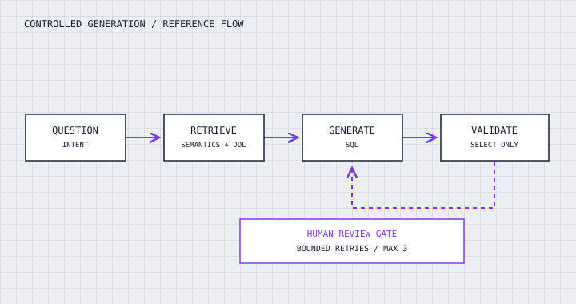

⌖ APPLIED AI // CUSTOMER ENGINEERING
SYSTEMS / INTEGRATION / DELIVERY
FROM
ARCHITECTURE
TO PRODUCTION.
I turn complex problems into working systems—connecting applied AI, hands-on engineering, and the environments where solutions need to work.
ENGINEERING IS ALIGNMENT
BETWEEN INTENT AND EXECUTION.
PART 01 // SELECTED WORK
Systems built
around real problems.
Case studies from customer-facing delivery, applied AI, and the reusable engineering beneath it.
 FIG 02 / ENVIRONMENTAL SIMULATION
FIG 02 / ENVIRONMENTAL SIMULATIONNEOM: Simulating design decisions
A physics-informed environment simulation built with architects and designers to evaluate real-world scenarios before construction.

FIG 03 / CONTROLLED GENERATIONText-to-SQL: making LLMs trustworthy
A deterministic graph workflow with two-stage retrieval, SQL validation, bounded retries, and human review.
 FIG 04 / COMPOSABLE MODULES
FIG 04 / COMPOSABLE MODULESComposable AI foundations
Extracting duplicated capabilities into independent SDKs so teams can reuse and compose shared functionality.
 FIG 05 / DOCUMENT PIPELINE
FIG 05 / DOCUMENT PIPELINEEnterprise RAG: documents to retrieval
An event-driven document ingestion pipeline with extraction, embeddings, indexing, and retrieval.
Client and enterprise examples are described at a high level. No confidential implementation details are included.
PART 02 // METHOD
How I work
through the ambiguity.
Start with the problem, build the smallest reliable path, integrate with the real environment, and validate with the people who will use it.
Discover
Clarify the actual decision or workflow that needs to improve.
Design
Choose the simplest architecture that satisfies the constraints.
Build
Implement the workflow, interfaces, and failure paths.
Validate
Test behavior against real inputs and user expectations.
Iterate
Use feedback and failures to improve the system.
PART 03 // ENGINEERING NOTES
Fieldnotes from
the workbench.
PART 04 // ENGINEERING TOOLKIT
Tools serve
the system.
A practical mix of applied AI, backend development, cloud services, retrieval, and real-time 3D engineering.
Applied AI
LLMs · RAG · Agentic workflows · Evaluation · Guardrails
Frameworks
LangGraph · LangChain · LlamaIndex · LiteLLM
Backend & cloud
Python · FastAPI · AWS · Bedrock · OpenSearch · Databricks
XR & simulation
Unreal Engine · Unity · Three.js · AR/VR
PART 05 // CONTACT
Have a hard
problem to solve?
I'm interested in applied AI engineering, customer-facing technical work, and building systems that are useful beyond the demo.
MORE ITERATIONS TO COME.